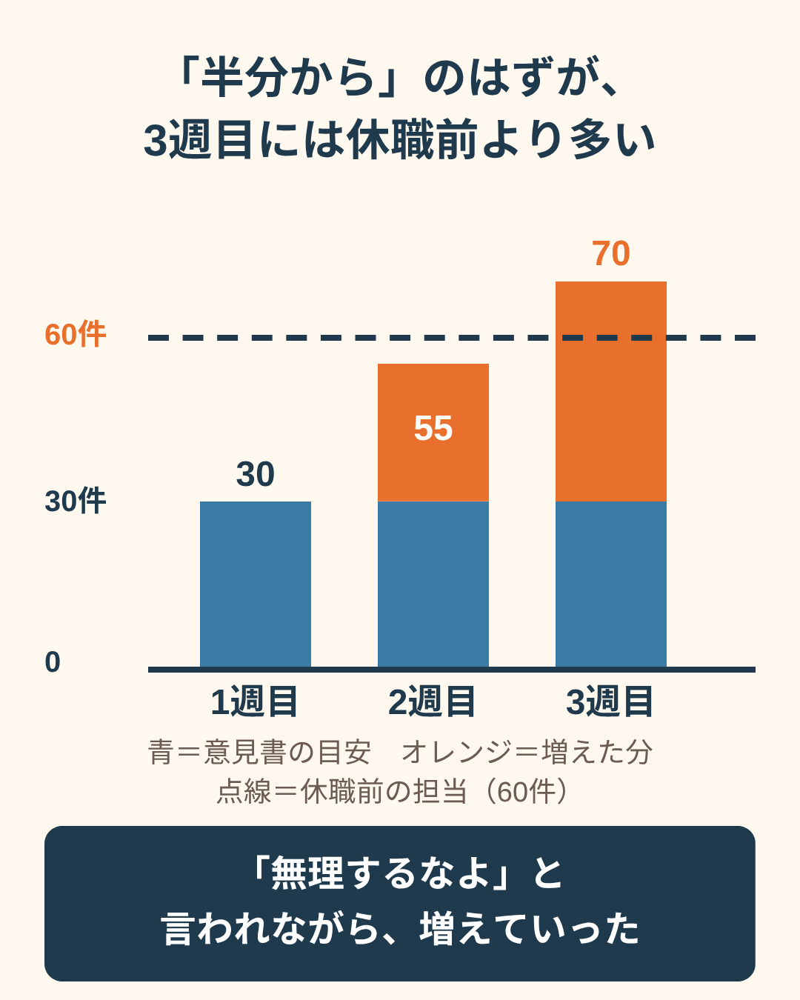
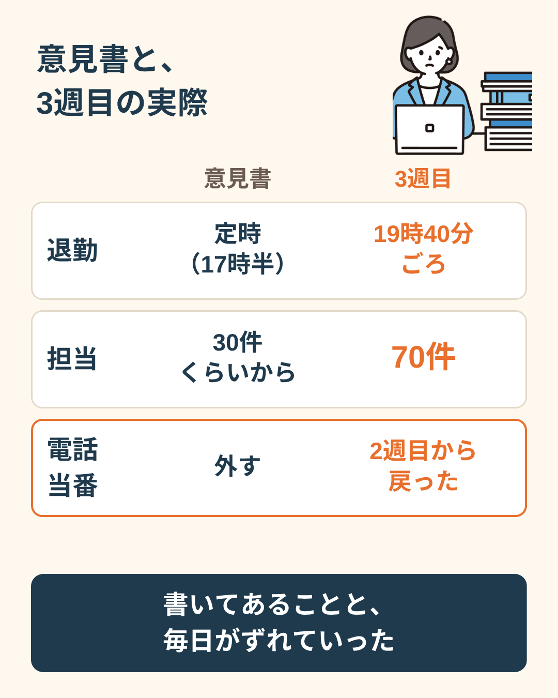
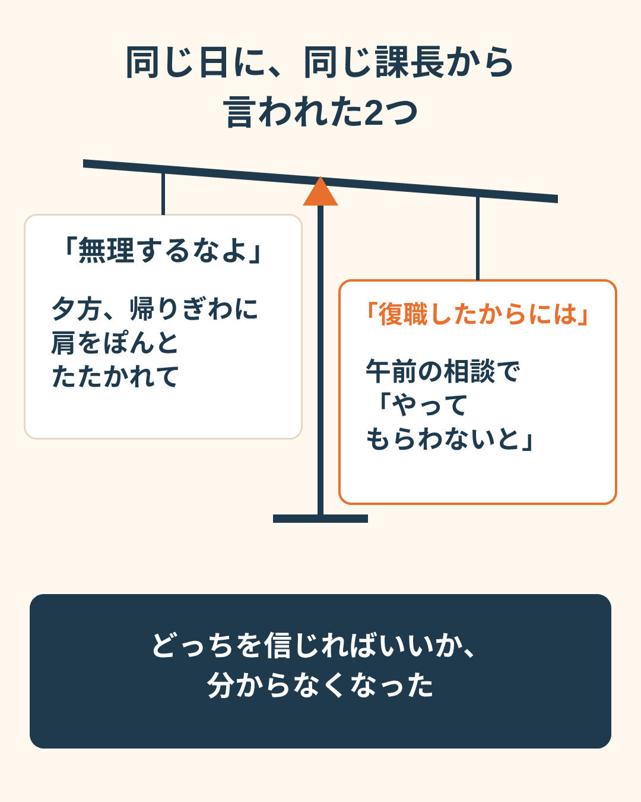
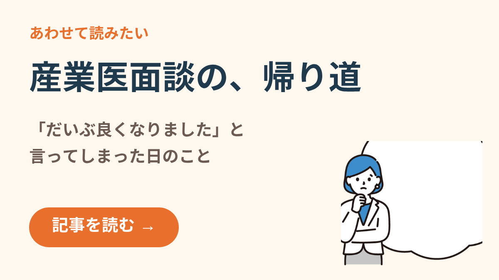
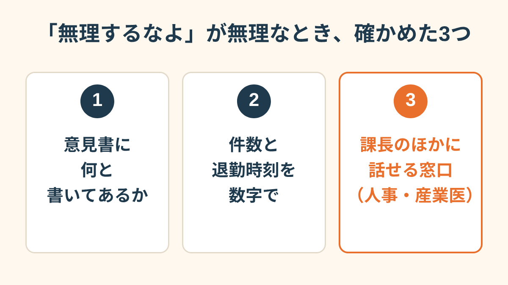

「無理するなよ」
課長はそう言って、私の肩をぽんとたたいて、先に帰っていった。17時52分だった。
机の上には、まだ手をつけていない更新の書類が11件。電話のランプが、ひとつ点滅していた。
その日の午前中、同じ課長に、私はこう言われていた。
「復職したからには、やってもらわないと」
どっちも、たぶん本気だった。だから余計に、どっちを信じていいのか分からなかった。
「最初は半分から」と書いてあった紙
29歳。社員30人くらいの賃貸管理の会社で、管理事務をしている。契約の更新手続きと、入居者さんからの電話の受付。
夏に適応障害と言われて、4か月休んだ。10月の頭に戻った。
戻る前の面談で、産業医の先生が意見書を書いてくれた。人事の人が、それを読み上げた。
当面、残業はしない。担当は休職前の半分くらいから。電話当番からは外す。
休職前の担当は60件くらいだったから、30件。1週目は本当にそのとおりで、定時の17時半に帰れた。
正直、帰るときがいちばんしんどかった。みんなまだキーボードを打っている中で、「お先に失礼します」と言う。言うたびに、声が小さくなっていった気がする。
段ボールで届いた25件
2週目の月曜。朝来たら、机の横に段ボールが置いてあった。
中身は、更新のファイル。先月辞めたパートさんが持っていた分だった。
「いやー、戻ってきてくれて、ほんと助かる。これ、頼めるかな。25件くらい」
課長は、本当にうれしそうだった。人が減って、課長自身も毎晩20時すぎまで残っているのを、私は知っていた。
「はい」と言った。言ったあとで、意見書のことを思い出した。でも、もう一回口を開くタイミングは、なかった。
その週の水曜から、電話当番の表にも、いつの間にか私の名前が戻っていた。誰が戻したのかは、分からない。たぶん、誰も深く考えていない。
「工場の生産管理なんですけど、復帰して10日目くらいに『もう慣れたでしょ』って、ライン2本まとめて持たされて。慣れたっていうか、慣れたフリがうまくなっただけなんですよね。家帰って、玄関で靴脱いだまま30分くらい座ってました。それ、誰にも言ってないです」
手帳の端に、退勤時刻
3週目。年末の更新の時期が重なって、担当はさらに増えた。数えたら70件。休職前より多い。

なんとなく、手帳の端に、毎日の退勤時刻を書くようになった。最初はただの癖みたいなものだった。
1週目は17時35分が並んでいる。2週目は18時台。3週目に入ると、19時40分、19時15分、19時50分。
水曜の朝、洗面所でマスカラを持ったまま、手が止まった。涙が勝手に出てきて、止まらなかった。悲しいとかじゃなくて、体のほうが先に「もう無理」と言っている感じだった。
結局、その日もいつもの電車に乗った。化粧は、駅のトイレでやり直した。

午前の相談と、夕方の「無理するなよ」
その水曜の午前中、会議室が空いたタイミングで、課長に声をかけた。手帳を持っていこうか迷って、結局、持っていかなかった。
「あの、担当の件数のことなんですけど。意見書だと、最初は半分くらいから、ってなってて……」
課長は腕を組んで、少し考えてから言った。
「うん、それは分かってる。でもさ、見て分かるでしょ、今みんな手一杯なの。復職したからには、やってもらわないと。できないことがあったら、できないって言ってくれればいいから」
できない、と今言ったつもりだった。でもそれ以上は、言葉にならなかった。「分かりました」と言って、席に戻った。
そして夕方、冒頭の「無理するなよ」になる。


「介護の現場で、復帰したら夜勤のシフトが普通に入ってて。リーダーに言ったら『じゃあ入れないようにするね』ってすぐ外してくれたんです。拍子抜けしました。3週間、言えずに我慢してたのが何だったんだろうって。言えば変わる職場もあるんですよ。うちが、たまたまそうだっただけかもしれないけど」
その夜に読んだページ
その夜、布団の中で「復職後 業務量 増やされた」で調べた。出てくるのは、会社の人事向けの記事ばかりだった。
何ページ目かで、厚生労働省の「こころの耳」にある、職場復帰支援の流れをまとめたページを見つけた。
読んでいくと、最後のほうに「職場復帰後のフォローアップ」という項目があった。復帰したあとも、上司だけでなく、産業医などの産業保健スタッフが定期的に話を聞いて、配慮の中身を見直していく、という流れになっていた。
そうか、と思った。意見書は、戻る日に1回渡して終わりの紙じゃなかったのかもしれない。そして、話す相手は課長ひとりじゃなくてもいいのかもしれない。
 15分でわかる職場復帰支援（こころの耳）休業から復帰後のフォローアップまでの流れ。復帰後に配慮を見直す考え方も。外部サイトが開きます →
15分でわかる職場復帰支援（こころの耳）休業から復帰後のフォローアップまでの流れ。復帰後に配慮を見直す考え方も。外部サイトが開きます →
金曜、人事に送った3行
課長にもう一回言う勇気は、正直なかった。木曜の夜、人事の担当の人あてに、メールを書いた。何回も書き直して、最後は3行になった。
「お疲れさまです。復職時の産業医の意見書の内容について、ご相談したいことがあります。産業医の先生との面談を入れていただくことはできますか」
送信ボタンは、金曜の朝、出社してすぐに押した。夜に送ると、返事を待つ間に眠れなくなると思ったから。
40分後に返事が来た。「承知しました。来週水曜の14時はいかがでしょうか」。
拍子抜けするくらい、普通の返事だった。
昼休みに、課長にだけ「来週、産業医の面談が入りました」と伝えた。課長は「あ、そう」と言って、少し間があって、「……そうか」と言った。それ以上は、何も聞かれなかった。
担当は、まだ70件のままだ。電話当番の表にも、まだ私の名前がある。
手帳は、水曜に持っていくつもりでいる。何を話すかは、まだ決めていない。退勤時刻のページに、付箋だけ貼った。
産業医の面談って、いざ座ると「大丈夫です」と言ってしまいがちだ。休職中の面談で「だいぶ良くなりました」と言ってしまった人の、帰り道の話。

産業医面談で「だいぶ良くなりました」と言ってしまった帰り道 →
この記事に、聞いてみたいことはありますか？
「自分の場合はどうなんだろう」と思ったことを、気軽に書いてみてください。いただいた質問は個別にお返事したうえで、匿名で記事にすることがあります。